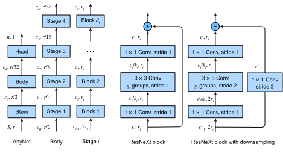
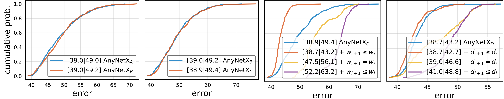

8.8. 设计卷积网络架构¶
前面的章节带领我们浏览了计算机视觉中现代网络设计的图景。我们所介绍的所有工作都有一个共同点：它们极大地依赖于科学家的直觉。许多架构深受人类创造力的影响，而对深度网络所提供的设计空间的系统探索则要少得多。尽管如此，这种网络工程（network engineering）方法取得了巨大的成功。
自AlexNet（ 8.1节 ）在ImageNet上击败传统的计算机视觉模型以来， 按照同一模式堆叠卷积块来构造非常深的网络就流行起来。 特别是，\(3 \times 3\)卷积因VGG网络（ 8.2节 ）而得到推广。 NiN（ 8.3节 ）表明，甚至\(1 \times 1\)卷积也能通过添加局部非线性而带来好处。 此外，NiN通过在所有位置进行汇聚，解决了网络头部信息聚合的问题。 GoogLeNet（ 8.4节 ）增加了不同卷积宽度的多个分支， 在其Inception块中结合了VGG和NiN的优点。 ResNet（ 8.6节 ） 改变了归纳偏置，使其倾向于恒等映射（而非\(f(x) = 0\)）。这使得非常深的网络成为可能。差不多十年后，ResNet的设计仍然流行，这证明了其设计的价值。最后，ResNeXt（ 8.6.5节 ）加入了分组卷积，在参数与计算量之间提供了更好的权衡。作为视觉领域Transformer的先驱，Squeeze-and-Excitation网络（SENet）允许在位置之间高效地传递信息 (Hu et al., 2018)。这是通过计算逐通道的全局注意力函数实现的。
到目前为止，我们一直略过了通过神经架构搜索（neural architecture search，NAS）得到的网络 (Liu et al., 2018, Zoph and Le, 2016)。我们选择这样做，是因为其成本通常极为巨大，需要依赖暴力搜索、遗传算法、强化学习或某种其他形式的超参数优化。给定固定的搜索空间， NAS使用搜索策略，根据返回的性能估计自动选择 一种架构。NAS的结果 是一个单一的网络实例。EfficientNet就是这种搜索的一个著名成果 (Tan and Le, 2019)。
下面我们讨论一种与追求单一最佳网络相当不同的思路。它在计算上相对便宜，沿途还能带来科学上的洞见，并且在结果质量上相当有效。让我们回顾 Radosavovic et al. (2020) 提出的设计网络设计空间的策略。该策略结合了手工设计和NAS的优势。它通过作用于网络的分布，并以能为一整族网络获得良好性能的方式优化这些分布，来实现这一点。其成果是RegNet，具体来说是RegNetX和RegNetY，外加一系列用于设计高性能CNN的指导原则。
import torch
from torch import nn
from torch.nn import functional as F
from d2l import torch as d2l
from mxnet import init, np, npx
from mxnet.gluon import nn
from d2l import mxnet as d2l
npx.set_np()
from flax import linen as nn
from d2l import jax as d2l
import tensorflow as tf
from d2l import tensorflow as d2l
8.8.1. AnyNet设计空间¶
下面的描述紧循 Radosavovic et al. (2020) 的论证，并做了若干简化，以使其适合本书的范围。 首先，我们需要一个用于探索网络族的模板。本章中的设计有一个共同点：网络由主干（stem）、主体（body）和头部（head）组成。主干执行初始的图像处理，通常通过窗口更大的卷积来完成。主体由多个块组成，承担从原始图像到对象表示所需的大部分变换。最后，头部将其转换为所需的输出，例如通过用于多类分类的softmax回归器。 主体又由多个阶段组成，这些阶段在分辨率逐级降低的图像上进行操作。事实上，主干和后续的每个阶段都会将空间分辨率缩小为原来的四分之一。最后，每个阶段由一个或多个块组成。从VGG到ResNeXt，这种模式是所有网络的共同之处。确实，在设计通用的AnyNet网络时，Radosavovic et al. (2020) 使用了 图8.6.5 中的ResNeXt块。

图8.8.1 AnyNet设计空间。每个箭头旁的数值\((\mathit{c}, \mathit{r})\)表示该位置的通道数\(c\)和图像的分辨率\(\mathit{r} \times \mathit{r}\)。从左到右：由主干、主体和头部组成的通用网络结构；由四个阶段组成的主体；一个阶段的详细结构；块的两种可选结构，一种不做下采样，另一种在每个维度上将分辨率减半。对于任一阶段\(\mathit{i}\)，设计选择包括深度\(\mathit{d_i}\)、输出通道数\(\mathit{c_i}\)、组数\(\mathit{g_i}\)和瓶颈比率\(\mathit{k_i}\)。¶
下面详细回顾 图8.8.1 中概述的结构。如前所述，AnyNet由主干、主体和头部组成。主干以RGB图像（3个通道）为输入，使用步幅为\(2\)的\(3 \times 3\)卷积，后接批量规范化，将分辨率从\(r \times r\)减半为\(r/2 \times r/2\)。此外，它生成\(c_0\)个通道，作为主体的输入。
由于该网络被设计为能很好地处理形状为\(224 \times 224 \times 3\)的ImageNet图像，主体通过4个阶段将其减小到\(7 \times 7 \times c_4\)（回想\(224 / 2^{1+4} = 7\)），每个阶段最终的步幅为\(2\)。最后，头部采用完全标准的设计：先做全局平均汇聚，类似于NiN（ 8.3节 ），再接一个全连接层，输出用于\(n\)类分类的\(n\)维向量。
大多数相关的设计决策都内在于网络的主体。主体按阶段推进，每个阶段由与我们在 8.6.5节 中讨论的相同类型的ResNeXt块组成。这里的设计同样是完全通用的：我们从一个通过步幅\(2\)将分辨率减半的块开始（即 图8.8.1 中最右边的那种）。为了与之匹配，ResNeXt块的残差分支需要经过一个\(1 \times 1\)卷积。这个块之后是数量可变的额外ResNeXt块，它们保持分辨率和通道数不变。请注意，一种常见的设计做法是在卷积块的设计中加入轻微的瓶颈。 因此，当瓶颈比率为\(k_i \geq 1\)时，我们在阶段\(i\)的每个块内分配一定数量的通道\(c_i/k_i\)（实验表明，这实际上并不有效，应当跳过）。最后，由于我们处理的是ResNeXt块，还需要为阶段\(i\)的分组卷积选择组数\(g_i\)。
然而，这个看似通用的设计空间仍然给我们提供了许多参数：我们可以设置块宽度（通道数）\(c_0, \ldots c_4\)、每个阶段的深度（块数）\(d_1, \ldots d_4\)、瓶颈比率\(k_1, \ldots k_4\)，以及组宽度（组数）\(g_1, \ldots g_4\)。 总共加起来有17个参数，导致需要探索的配置数量大得不合理。我们需要一些工具来有效地缩减这个巨大的设计空间。设计空间在概念上的美妙之处就在这里。在这样做之前，让我们先实现这个通用设计。
class AnyNet(d2l.Classifier):
def stem(self, num_channels):
return nn.Sequential(
nn.LazyConv2d(num_channels, kernel_size=3, stride=2, padding=1),
nn.LazyBatchNorm2d(), nn.ReLU())
class AnyNet(d2l.Classifier):
def stem(self, num_channels):
net = nn.Sequential()
net.add(nn.Conv2D(num_channels, kernel_size=3, padding=1, strides=2),
nn.BatchNorm(), nn.Activation('relu'))
return net
class AnyNet(d2l.Classifier):
arch: tuple
stem_channels: int
lr: float = 0.1
num_classes: int = 10
training: bool = True
def setup(self):
self.net = self.create_net()
def stem(self, num_channels):
return nn.Sequential([
nn.Conv(num_channels, kernel_size=(3, 3), strides=(2, 2),
padding=(1, 1)),
nn.BatchNorm(not self.training),
nn.relu
])
class AnyNet(d2l.Classifier):
def stem(self, num_channels):
return tf.keras.models.Sequential([
tf.keras.layers.Conv2D(num_channels, kernel_size=3, strides=2,
padding='same'),
tf.keras.layers.BatchNormalization(),
tf.keras.layers.Activation('relu')])
每个阶段由depth个ResNeXt块组成，
其中num_channels指定块宽度。
注意，第一个块将输入图像的高度和宽度减半。
@d2l.add_to_class(AnyNet)
def stage(self, depth, num_channels, groups, bot_mul):
blk = []
for i in range(depth):
if i == 0:
blk.append(d2l.ResNeXtBlock(num_channels, groups, bot_mul,
use_1x1conv=True, strides=2))
else:
blk.append(d2l.ResNeXtBlock(num_channels, groups, bot_mul))
return nn.Sequential(*blk)
@d2l.add_to_class(AnyNet)
def stage(self, depth, num_channels, groups, bot_mul):
net = nn.Sequential()
for i in range(depth):
if i == 0:
net.add(d2l.ResNeXtBlock(
num_channels, groups, bot_mul, use_1x1conv=True, strides=2))
else:
net.add(d2l.ResNeXtBlock(
num_channels, num_channels, groups, bot_mul))
return net
@d2l.add_to_class(AnyNet)
def stage(self, depth, num_channels, groups, bot_mul):
blk = []
for i in range(depth):
if i == 0:
blk.append(d2l.ResNeXtBlock(num_channels, groups, bot_mul,
use_1x1conv=True, strides=(2, 2), training=self.training))
else:
blk.append(d2l.ResNeXtBlock(num_channels, groups, bot_mul,
training=self.training))
return nn.Sequential(blk)
@d2l.add_to_class(AnyNet)
def stage(self, depth, num_channels, groups, bot_mul):
net = tf.keras.models.Sequential()
for i in range(depth):
if i == 0:
net.add(d2l.ResNeXtBlock(num_channels, groups, bot_mul,
use_1x1conv=True, strides=2))
else:
net.add(d2l.ResNeXtBlock(num_channels, groups, bot_mul))
return net
把网络的主干、主体和头部组合在一起， 我们就完成了AnyNet的实现。
@d2l.add_to_class(AnyNet)
def __init__(self, arch, stem_channels, lr=0.1, num_classes=10):
super(AnyNet, self).__init__()
self.save_hyperparameters()
self.net = nn.Sequential(self.stem(stem_channels))
for i, s in enumerate(arch):
self.net.add_module(f'stage{i+1}', self.stage(*s))
self.net.add_module('head', nn.Sequential(
nn.AdaptiveAvgPool2d((1, 1)), nn.Flatten(),
nn.LazyLinear(num_classes)))
self.net.apply(d2l.init_cnn)
@d2l.add_to_class(AnyNet)
def __init__(self, arch, stem_channels, lr=0.1, num_classes=10):
super(AnyNet, self).__init__()
self.save_hyperparameters()
self.net = nn.Sequential()
self.net.add(self.stem(stem_channels))
for i, s in enumerate(arch):
self.net.add(self.stage(*s))
self.net.add(nn.GlobalAvgPool2D(), nn.Dense(num_classes))
self.net.initialize(init.Xavier())
@d2l.add_to_class(AnyNet)
def create_net(self):
net = nn.Sequential([self.stem(self.stem_channels)])
for i, s in enumerate(self.arch):
net.layers.extend([self.stage(*s)])
net.layers.extend([nn.Sequential([
lambda x: nn.avg_pool(x, window_shape=x.shape[1:3],
strides=x.shape[1:3], padding='valid'),
lambda x: x.reshape((x.shape[0], -1)),
nn.Dense(self.num_classes)])])
return net
@d2l.add_to_class(AnyNet)
def __init__(self, arch, stem_channels, lr=0.1, num_classes=10):
super(AnyNet, self).__init__()
self.save_hyperparameters()
self.net = tf.keras.models.Sequential(self.stem(stem_channels))
for i, s in enumerate(arch):
self.net.add(self.stage(*s))
self.net.add(tf.keras.models.Sequential([
tf.keras.layers.GlobalAvgPool2D(),
tf.keras.layers.Dense(units=num_classes)]))
8.8.2. 设计空间的分布与参数¶
正如 8.8.1节 中刚刚讨论的，设计空间的参数就是该设计空间中网络的超参数。 考虑在AnyNet设计空间中确定良好参数的问题。我们可以尝试为给定的计算量（例如FLOPs和计算时间）找到单一最佳的参数选择。即使每个参数只允许两种可能的选择，我们也必须探索\(2^{17} = 131072\)种组合才能找到最佳解。由于成本极高，这显然不可行。更糟的是，我们从这个练习中并不能真正学到任何关于应当如何设计网络的知识。下次我们加入，比如说，一个X阶段、一个移位操作或类似的东西时，就需要从头开始。更糟糕的是，由于训练中的随机性（舍入、混洗、比特错误），没有两次运行可能产生完全相同的结果。更好的策略是尝试确定参数选择之间应如何关联的一般性准则。例如，瓶颈比率、通道数、块数、组数，或者它们在层间的变化，理想情况下应当由一组简单的规则来决定。Radosavovic et al. (2019) 中的方法依赖于以下四个假设：
我们假设一般性的设计原则确实存在，因此满足这些要求的许多网络应当具有良好的性能。因此，确定网络上的一个分布可能是一种合理的策略。换句话说，我们假设草堆里有许多根好针。
我们不必把网络训练到收敛，才能评估一个网络是否良好。相反，使用中间结果作为最终准确率的可靠指引就足够了。使用（近似的）代理指标来优化目标称为多保真度优化（multi-fidelity optimization） (Forrester et al., 2007)。因此，设计优化是仅基于对数据集进行几轮遍历后所达到的准确率来进行的，这显著降低了成本。
在较小规模（较小的网络）上得到的结果可以推广到较大的网络。因此，优化是在结构相似但块数更少、通道数更少等的网络上进行的。只有在最后，我们才需要验证这样找到的网络在较大规模下是否也具有良好性能。
设计的各个方面可以近似地分解，从而能够在一定程度上独立地推断它们对结果质量的影响。换句话说，优化问题适度地容易。
这些假设使我们能够低成本地测试许多网络。特别是，我们可以从配置空间中均匀采样并评估其性能。随后，我们可以通过考察这些网络所能达到的误差/准确率的分布来评估参数选择的质量。用\(F(e)\)表示从概率分布\(p\)中抽取的、给定设计空间中网络所犯误差的累积分布函数（cumulative distribution function，CDF）。也就是说，
现在我们的目标是找到一个在网络上的分布\(p\)，使得大多数网络的误差率非常低，并且\(p\)的支撑集是简洁的。当然，精确地做到这一点在计算上是不可行的。我们退而求其次，从\(p\)中抽取网络样本\(\mathcal{Z} \stackrel{\textrm{def}}{=} \{\textrm{net}_1, \ldots \textrm{net}_n\}\)（相应的误差分别为\(e_1, \ldots, e_n\)），并使用经验CDF \(\hat{F}(e, \mathcal{Z})\) 代替：
每当一组选择的CDF优超（或匹配）另一条CDF时，就意味着它的参数选择更优（或不相上下）。据此， Radosavovic et al. (2020) 尝试对所有阶段\(i\)使用共享的网络瓶颈比率\(k_i = k\)。这就去掉了控制瓶颈比率的四个参数中的三个。为了评估这是否（负面地）影响性能，可以从受约束的分布以及不受约束的分布中分别抽取网络，并比较相应的CDF。结果表明，该约束根本不影响网络分布的准确率，如 图8.8.2 的第一个面板所示。 同样，我们可以选择在网络的不同阶段使用相同的组宽度\(g_i = g\)。这同样不影响性能，如 图8.8.2 的第二个面板所示。 这两步合起来使自由参数的数量减少了六个。

图8.8.2 比较不同设计空间的误差经验分布函数。\(\textrm{AnyNet}_\mathit{A}\)是原始设计空间；\(\textrm{AnyNet}_\mathit{B}\)统一了瓶颈比率，\(\textrm{AnyNet}_\mathit{C}\)还统一了组宽度，\(\textrm{AnyNet}_\mathit{D}\)则随阶段增加网络深度。从左到右：(i) 统一瓶颈比率对性能没有影响；(ii) 统一组宽度对性能没有影响；(iii) 随阶段增加网络宽度（通道数）能提高性能；(iv) 随阶段增加网络深度能提高性能。图由 Radosavovic et al. (2020) 提供。¶
接下来，我们寻找减少阶段宽度和深度方面大量潜在选择的方法。一个合理的假设是：随着网络加深，通道数应当增加，即\(c_i \geq c_{i-1}\)（按照 图8.8.2 中的记号，即\(w_{i+1} \geq w_i\)），从而得到 \(\textrm{AnyNetX}_D\)。同样合理的是假设随着阶段推进，它们应当变得更深，即\(d_i \geq d_{i-1}\)，从而得到\(\textrm{AnyNetX}_E\)。这可以分别在 图8.8.2 的第三个和第四个面板中得到实验验证。
8.8.3. RegNet¶
由此得到的\(\textrm{AnyNetX}_E\)设计空间由遵循易于理解的设计原则的简单网络组成：
对所有阶段\(i\)共享瓶颈比率\(k_i = k\)；
对所有阶段\(i\)共享组宽度\(g_i = g\)；
随阶段增加网络宽度：\(c_{i} \leq c_{i+1}\)；
随阶段增加网络深度：\(d_{i} \leq d_{i+1}\)。
这给我们留下了最后一些选择：如何为最终\(\textrm{AnyNetX}_E\)设计空间中的上述参数挑选具体取值。通过研究\(\textrm{AnyNetX}_E\)分布中表现最好的网络，可以观察到以下现象：网络的宽度理想情况下应随网络中块的索引线性增加，即\(c_j \approx c_0 + c_a j\)，其中\(j\)是块的索引，斜率\(c_a > 0\)。由于我们只能按阶段选择不同的块宽度，因此得到的是一个为匹配这种依赖关系而设计的分段常数函数。此外，实验还表明，瓶颈比率为\(k = 1\)时表现最好，也就是说，我们最好不要使用瓶颈。
我们建议感兴趣的读者研读 Radosavovic et al. (2020)，以进一步了解针对不同计算量的特定网络设计细节。例如，一个有效的32层RegNetX变体由以下参数给出：\(k = 1\)（无瓶颈）、\(g = 16\)（组宽度为16）、第一阶段和第二阶段分别有\(c_1 = 32\)和\(c_2 = 80\)个通道，深度上选择\(d_1=4\)和\(d_2=6\)个块。这一设计带来的惊人洞见是：即使考察更大规模的网络，它依然适用。更妙的是，它甚至适用于具有全局通道激活的Squeeze-and-Excitation（SE）网络设计（RegNetY） (Hu et al., 2018)。
class RegNetX32(AnyNet):
def __init__(self, lr=0.1, num_classes=10):
stem_channels, groups, bot_mul = 32, 16, 1
depths, channels = (4, 6), (32, 80)
super().__init__(
((depths[0], channels[0], groups, bot_mul),
(depths[1], channels[1], groups, bot_mul)),
stem_channels, lr, num_classes)
class RegNetX32(AnyNet):
def __init__(self, lr=0.1, num_classes=10):
stem_channels, groups, bot_mul = 32, 16, 1
depths, channels = (4, 6), (32, 80)
super().__init__(
((depths[0], channels[0], groups, bot_mul),
(depths[1], channels[1], groups, bot_mul)),
stem_channels, lr, num_classes)
class RegNetX32(AnyNet):
lr: float = 0.1
num_classes: int = 10
stem_channels: int = 32
arch: tuple = ((4, 32, 16, 1), (6, 80, 16, 1))
class RegNetX32(AnyNet):
def __init__(self, lr=0.1, num_classes=10):
stem_channels, groups, bot_mul = 32, 16, 1
depths, channels = (4, 6), (32, 80)
super().__init__(
((depths[0], channels[0], groups, bot_mul),
(depths[1], channels[1], groups, bot_mul)),
stem_channels, lr, num_classes)
可以看到，每个RegNetX阶段都会逐步降低分辨率并增加输出通道数。
RegNetX32().layer_summary((1, 1, 96, 96))
RegNetX32().layer_summary((1, 1, 96, 96))
RegNetX32(training=False).layer_summary((1, 96, 96, 1))
RegNetX32().layer_summary((1, 96, 96, 1))
8.8.4. 训练¶
在Fashion-MNIST数据集上训练32层RegNetX与之前一样。
model = RegNetX32(lr=0.05)
trainer = d2l.Trainer(max_epochs=10, num_gpus=1)
data = d2l.FashionMNIST(batch_size=128, resize=(96, 96))
trainer.fit(model, data)
model = RegNetX32(lr=0.05)
trainer = d2l.Trainer(max_epochs=10, num_gpus=1)
data = d2l.FashionMNIST(batch_size=128, resize=(96, 96))
trainer.fit(model, data)
model = RegNetX32(lr=0.05)
trainer = d2l.Trainer(max_epochs=10, num_gpus=1)
data = d2l.FashionMNIST(batch_size=128, resize=(96, 96))
trainer.fit(model, data)
trainer = d2l.Trainer(max_epochs=10)
data = d2l.FashionMNIST(batch_size=128, resize=(96, 96))
with d2l.try_gpu():
model = RegNetX32(lr=0.01)
trainer.fit(model, data)
8.8.5. 讨论¶
由于具有视觉所需的局部性和平移不变性（ 7.1节 ） 等理想归纳偏置（假设或偏好），CNN一直是这一领域的主导架构。从LeNet一直到Transformer（ 11.7节 ） (Dosovitskiy et al., 2021, Touvron et al., 2021) 在准确率方面开始超越CNN之前，情况一直如此。尽管视觉Transformer方面的许多最新进展可以移植回CNN (Liu et al., 2022)，但这只有在更高的计算成本下才有可能。同样重要的是，最近的硬件优化（NVIDIA Ampere和Hopper）只会让天平进一步向Transformer倾斜。
值得注意的是，Transformer对局部性和平移不变性的归纳偏置程度明显低于CNN。学到的结构之所以占据上风，一个重要原因是大型图像集合的可用性，例如LAION-400m和LAION-5B (Schuhmann et al., 2022)，其中包含多达50亿张图像。相当出人意料的是，这方面一些更相关的工作甚至包括MLP (Tolstikhin et al., 2021)。
总之，视觉Transformer（ 11.8节 ）目前在大规模图像分类的最先进性能方面处于领先， 这表明可扩展性胜过归纳偏置 (Dosovitskiy et al., 2021)。 这包括用多头自注意力（ 11.5节 ）预训练大规模Transformer（ 11.9节 ）。我们邀请读者深入阅读这些章节，以获得更详细的讨论。
8.8.6. 练习¶
将阶段数增加到四个。你能设计一个性能更好的更深RegNetX吗？
通过把ResNeXt块替换为ResNet块，将RegNet去掉ResNeXt化。你的新模型表现如何？
通过违反RegNetX的设计原则，实现多个“VioNet”家族的实例。它们的表现如何？(\(d_i\), \(c_i\), \(g_i\), \(b_i\))中哪个是最重要的因素？
你的目标是设计“完美”的MLP。你能使用前面介绍的设计原则找到好的架构吗？是否可能从小网络外推到大网络？